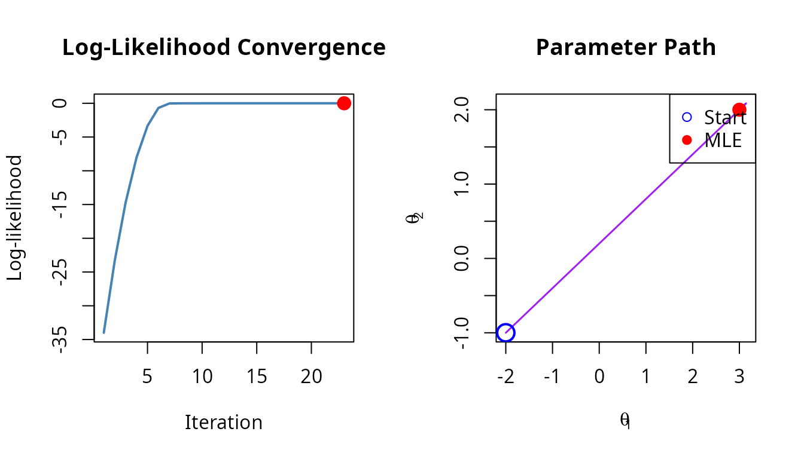

Designing Optimization Strategies
Alexander Towell
2026-02-05
Source:vignettes/strategy-design.Rmd
strategy-design.RmdIntroduction
This vignette shows how to design effective optimization strategies by composing solvers. We’ll cover:
- Diagnosing convergence problems
- Building robust pipelines
- Benchmarking solver combinations
- Handling common failure modes
The Problem: Why Composition?
Consider fitting a mixture of normals - a notoriously multi-modal problem:
# Generate mixture data
x_mix <- c(rnorm(70, mean = 0, sd = 1), rnorm(30, mean = 5, sd = 1.5))
# Log-likelihood for 2-component Gaussian mixture
mixture_loglike <- function(theta) {
mu1 <- theta[1]; s1 <- theta[2]
mu2 <- theta[3]; s2 <- theta[4]
pi1 <- theta[5]
if (s1 <= 0 || s2 <= 0 || pi1 <= 0 || pi1 >= 1) return(-Inf)
# Log-sum-exp for numerical stability
log_p1 <- log(pi1) + dnorm(x_mix, mu1, s1, log = TRUE)
log_p2 <- log(1 - pi1) + dnorm(x_mix, mu2, s2, log = TRUE)
log_max <- pmax(log_p1, log_p2)
sum(log_max + log(exp(log_p1 - log_max) + exp(log_p2 - log_max)))
}
problem_mix <- mle_problem(
loglike = mixture_loglike,
constraint = mle_constraint(
support = function(theta) theta[2] > 0 && theta[4] > 0 &&
theta[5] > 0 && theta[5] < 1,
project = function(theta) c(theta[1], max(theta[2], 0.1), theta[3],
max(theta[4], 0.1), min(max(theta[5], 0.01), 0.99))
)
)Single Solver: Often Fails
# Random starting point
theta0 <- c(-2, 1, 3, 1, 0.5)
result_simple <- gradient_ascent(max_iter = 100)(problem_mix, theta0)
cat("Simple gradient ascent:\n")
#> Simple gradient ascent:
cat(" mu1 =", round(result_simple$theta.hat[1], 2),
" mu2 =", round(result_simple$theta.hat[3], 2), "\n")
#> mu1 = 0.12 mu2 = 2.66
cat(" Log-likelihood:", round(result_simple$loglike, 2), "\n")
#> Log-likelihood: -219.25The result depends heavily on the starting point, and we often get stuck at local optima.
Strategy 1: Coarse-to-Fine
Start with a rough global search, then refine:
# K-means for smart initialization
km <- kmeans(x_mix, centers = 2)
mu1_init <- min(km$centers)
mu2_init <- max(km$centers)
s1_init <- sd(x_mix[km$cluster == which.min(km$centers)])
s2_init <- sd(x_mix[km$cluster == which.max(km$centers)])
pi_init <- mean(km$cluster == which.min(km$centers))
theta_init <- c(mu1_init, s1_init, mu2_init, s2_init, pi_init)
# Coarse-to-fine: random search -> gradient ascent
strategy <- random_search(
sampler = function() c(runif(1, -5, 10), runif(1, 0.5, 3),
runif(1, -5, 10), runif(1, 0.5, 3),
runif(1, 0.2, 0.8)),
n = 50
) %>>% gradient_ascent(max_iter = 200)
result_coarse <- strategy(problem_mix, theta_init)
cat("Coarse-to-fine strategy:\n")
#> Coarse-to-fine strategy:
cat(" mu1 =", round(result_coarse$theta.hat[1], 2),
" mu2 =", round(result_coarse$theta.hat[3], 2), "\n")
#> mu1 = 0.08 mu2 = 4.96
cat(" Log-likelihood:", round(result_coarse$loglike, 2), "\n")
#> Log-likelihood: -215.73Strategy 2: Multiple Restarts
Run gradient ascent from many starting points:
# Custom sampler for mixture parameters
mixture_sampler <- function() {
c(runif(1, -5, 10), # mu1
runif(1, 0.5, 3), # sigma1
runif(1, -5, 10), # mu2
runif(1, 0.5, 3), # sigma2
runif(1, 0.2, 0.8)) # pi
}
strategy <- with_restarts(
gradient_ascent(max_iter = 100),
n = 20,
sampler = mixture_sampler
)
result_restarts <- strategy(problem_mix, theta_init)
cat("Random restarts (20 starts):\n")
#> Random restarts (20 starts):
cat(" mu1 =", round(result_restarts$theta.hat[1], 2),
" mu2 =", round(result_restarts$theta.hat[3], 2), "\n")
#> mu1 = 0.08 mu2 = 4.96
cat(" Log-likelihood:", round(result_restarts$loglike, 2), "\n")
#> Log-likelihood: -215.73
cat(" Best restart:", result_restarts$best_restart, "of", result_restarts$n_restarts, "\n")
#> Best restart: 1 of 20Strategy 3: Racing Solvers
When unsure which method works best, race them:
strategy <- gradient_ascent() %|% bfgs() %|% nelder_mead()
result_race <- strategy(problem_mix, theta_init)
cat("Racing strategy:\n")
#> Racing strategy:
cat(" Winner:", result_race$solver, "\n")
#> Winner: gradient_ascent
cat(" mu1 =", round(result_race$theta.hat[1], 2),
" mu2 =", round(result_race$theta.hat[3], 2), "\n")
#> mu1 = 0.08 mu2 = 4.96
cat(" Log-likelihood:", round(result_race$loglike, 2), "\n")
#> Log-likelihood: -215.73Strategy 4: Global + Local
Combine simulated annealing for global exploration with gradient ascent for local refinement:
strategy <- sim_anneal(temp_init = 10, cooling_rate = 0.95, max_iter = 500) %>>%
gradient_ascent(max_iter = 100)
result_global <- strategy(problem_mix, theta_init)
cat("Global + local strategy:\n")
#> Global + local strategy:
cat(" mu1 =", round(result_global$theta.hat[1], 2),
" mu2 =", round(result_global$theta.hat[3], 2), "\n")
#> mu1 = 0.08 mu2 = 4.96
cat(" Log-likelihood:", round(result_global$loglike, 2), "\n")
#> Log-likelihood: -215.73Diagnosing Convergence
Use tracing to understand optimization behavior:
# Enable full tracing
trace_cfg <- mle_trace(values = TRUE, gradients = TRUE, path = TRUE)
# Simple problem for clear visualization
simple_problem <- mle_problem(
loglike = function(theta) -sum((theta - c(3, 2))^2),
score = function(theta) -2 * (theta - c(3, 2)),
constraint = mle_constraint(support = function(theta) TRUE)
)
result_traced <- gradient_ascent(max_iter = 30)(
simple_problem, c(-2, -1), trace = trace_cfg
)
# Visualize convergence
plot(result_traced, which = c("loglike", "path"))
Extracting Trace Data
path_df <- optimization_path(result_traced)
head(path_df)
#> iteration loglike grad_norm theta_1 theta_2
#> 1 1 -34.0000000 11.661904 -2.0000000 -1.00000000
#> 2 2 -23.3380962 9.661904 -1.1425071 -0.48550424
#> 3 3 -14.6761924 7.661904 -0.2850141 0.02899151
#> 4 4 -8.0142886 5.661904 0.5724788 0.54348727
#> 5 5 -3.3523848 3.661904 1.4299717 1.05798302
#> 6 6 -0.6904811 1.661904 2.2874646 1.57247878
# Check convergence rate
if (nrow(path_df) > 5) {
improvement <- diff(path_df$loglike)
cat("\nLog-likelihood improvement per iteration:\n")
print(round(improvement[1:min(5, length(improvement))], 4))
}
#>
#> Log-likelihood improvement per iteration:
#> [1] 10.6619 8.6619 6.6619 4.6619 2.6619Benchmarking Strategies
Compare different strategies on the same problem:
# Test problem: bimodal likelihood
bimodal <- mle_problem(
loglike = function(theta) {
log(0.3 * dnorm(theta, 2, 0.5) + 0.7 * dnorm(theta, 7, 0.5))
},
constraint = mle_constraint(support = function(theta) TRUE)
)
# Strategies to compare
strategies <- list(
"Gradient Ascent" = gradient_ascent(max_iter = 100),
"BFGS" = bfgs(),
"Nelder-Mead" = nelder_mead(),
"SA + GA" = sim_anneal(max_iter = 200) %>>% gradient_ascent(),
"Restarts (5)" = with_restarts(gradient_ascent(), n = 5,
sampler = function() runif(1, -5, 15))
)
# Run each strategy multiple times
results <- data.frame(
Strategy = character(),
LogLike = numeric(),
Theta = numeric(),
stringsAsFactors = FALSE
)
for (name in names(strategies)) {
for (rep in 1:3) {
set.seed(rep * 100)
theta0 <- runif(1, -5, 15)
result <- tryCatch(
strategies[[name]](bimodal, theta0),
error = function(e) NULL
)
if (!is.null(result)) {
results <- rbind(results, data.frame(
Strategy = name,
LogLike = result$loglike,
Theta = result$theta.hat[1],
stringsAsFactors = FALSE
))
}
}
}
#> Warning in optim(par = theta0, fn = fn, method = "Nelder-Mead", control = list(maxit = max_iter, : one-dimensional optimization by Nelder-Mead is unreliable:
#> use "Brent" or optimize() directly
#> Warning in optim(par = theta0, fn = fn, method = "Nelder-Mead", control = list(maxit = max_iter, : one-dimensional optimization by Nelder-Mead is unreliable:
#> use "Brent" or optimize() directly
#> Warning in optim(par = theta0, fn = fn, method = "Nelder-Mead", control = list(maxit = max_iter, : one-dimensional optimization by Nelder-Mead is unreliable:
#> use "Brent" or optimize() directly
# Summarize results
library(dplyr)
#>
#> Attaching package: 'dplyr'
#> The following objects are masked from 'package:stats':
#>
#> filter, lag
#> The following objects are masked from 'package:base':
#>
#> intersect, setdiff, setequal, union
results %>%
group_by(Strategy) %>%
summarize(
MeanLogLike = round(mean(LogLike), 2),
BestTheta = round(Theta[which.max(LogLike)], 2),
.groups = "drop"
) %>%
arrange(desc(MeanLogLike))
#> # A tibble: 5 × 3
#> Strategy MeanLogLike BestTheta
#> <chr> <dbl> <dbl>
#> 1 Restarts (5) -0.58 7
#> 2 BFGS -0.86 7
#> 3 Gradient Ascent -0.86 7
#> 4 Nelder-Mead -0.86 7
#> 5 SA + GA -0.86 7Best Practices
1. Start Simple, Add Complexity
# First try: simple gradient ascent
result <- gradient_ascent()(problem, theta0)
# If it fails, add restarts
result <- with_restarts(gradient_ascent(), n = 10, sampler = my_sampler)(problem, theta0)
# If still failing, try global + local
result <- (sim_anneal() %>>% gradient_ascent())(problem, theta0)3. Match Solver to Problem
| Problem Type | Recommended Strategy |
|---|---|
| Smooth, unimodal |
gradient_ascent() or bfgs()
|
| Multi-modal |
with_restarts() or
sim_anneal() %>>% gradient_ascent()
|
| High-dimensional |
lbfgsb() or coordinate_ascent()
|
| Non-smooth | nelder_mead() |
| Unknown | gradient_ascent() %|% bfgs() %|% nelder_mead() |